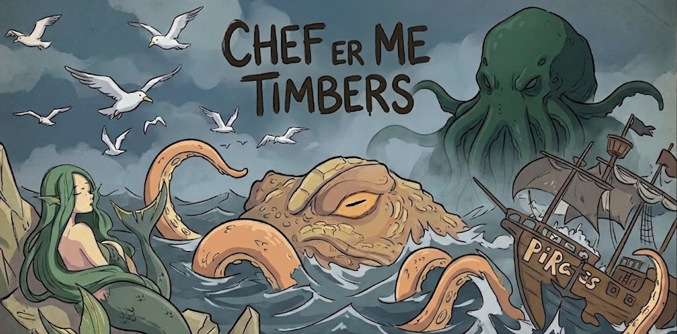
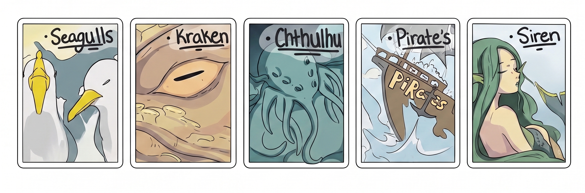
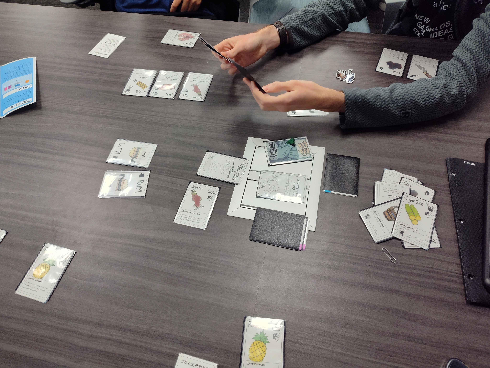
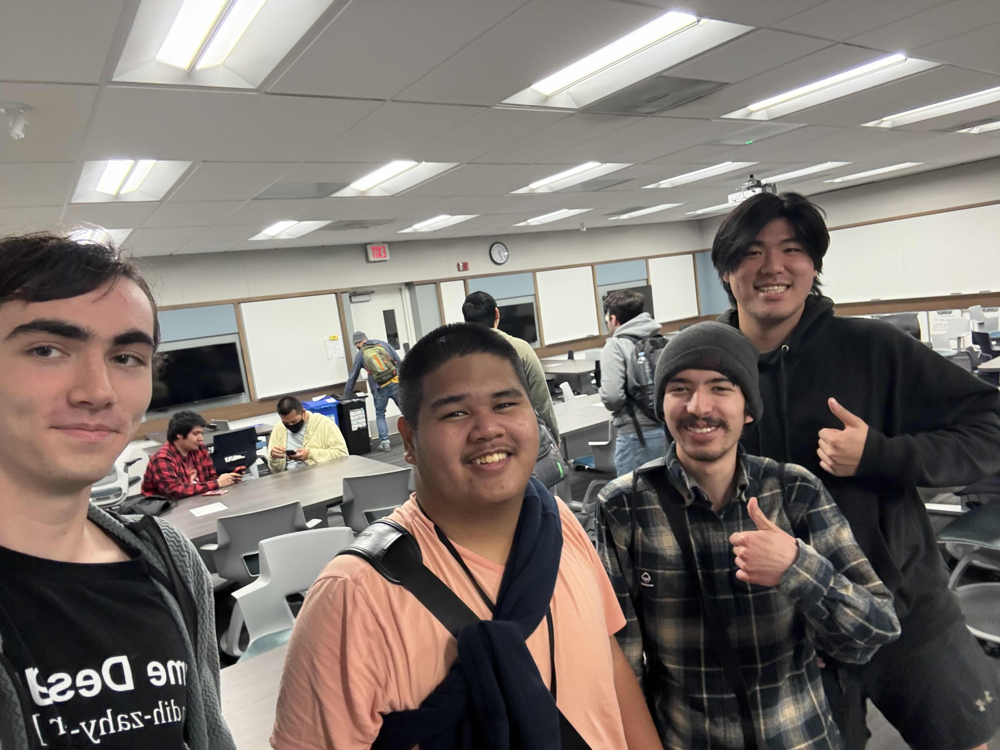

Chef-Me-Timbers! is a cooperative 40-card pirate cooking game for 2–4 players, built by a five-person team for GDIM 129. The project ran 10+ playtests, developed a customer satisfaction scoring system, and used playtest data to find and patch exploitable customers and a game-breaking resource lock, turning a chaotic prototype into a readable, fair co-op experience.
Overview

Players are a crew of pirate-chefs racing to satisfy demanding customers (sirens, krakens, hostile pirates, even Cthulhu) by assembling ingredients into dishes before the deck runs out or the customers lose patience. The design rests on three pillars: cooperation under a shared timer, hidden information that forces communication (players may only state one property of a card in their hand per turn), and dual-use cards where every ingredient is both a recipe component and a one-time ability.
The game pulls mechanics from titles the team studied closely: the dependent-communication tension of Hanabi, the offense-vs-defense risk decisions of Slay the Spire, the random boss-draw pressure of Bloodborne: The Card Game, and the cooperative-decline urgency of Forbidden Island. The core challenge was the gameplay layer: keeping the co-op loop tense without tipping into trivial or unwinnable.
The Problem
A co-op game lives or dies on balance and legibility. Early builds had both kinds of failure, and playtesting surfaced them fast:
- An exploitable customer. The Gentle Seagullmen would accept any food, which made them trivially easy and let groups coast. Playtest notes flagged this as needing a "patch," and the fix required 3 prepared items instead of any food.
- A hard-lock resource bug. Rum is crafted from Water + Sugarcane, and three different customers need it. In one session a player drew both Water cards and the crew soft-locked, leaving no one else able to craft Rum. This "Water Problem" felt like a bug, not a decision.
- No feeling of teamwork. Despite being co-op, early sessions played like solitaire in parallel, a core experience problem rather than just a tuning issue.
Process
- Ran 10+ playtests (including blind playtests with first-time players) and logged where groups stalled, misread cards, or broke the intended flow.
- Developed the customer satisfaction system: customers start at 100 satisfaction, lose 25 per unsatisfied round, and leave at 0, giving the race a clear, trackable pressure curve within a 3–4 round window.
- Shifted scoring from losing points to customers leaving, so players only ever gain score by genuinely satisfying a customer, a cleaner and less punishing feedback loop.
- Identified the Seagullmen exploit and the Water hard-lock from playtest data and drove fixes for both.
- Tracked bugs, rule ambiguities, and balance issues in Jira against milestones, so the five-person team always knew what was blocking a stable build.

Key Findings from Playtesting
The most valuable feedback came from blind playtests, where first-time players consistently tripped on the same things. The recurring theme: what felt "intuitive" to the team was anything but. Major findings included:
- Color-coding misled players. People instinctively tried to match cards by color, so the team moved to an icon-based system (Eat / Cook / Use / Ability symbols on every card).
- Core rules weren't landing. Players missed the 3-card hand limit, got confused by crafting (Water + Sugarcane → Rum), and used "pick up from inventory" to feed customers instead of for player-to-player handoffs.
- Hazards were forgotten mid-game. The Barnacles hazard especially: some players assumed the whole deck was meant to be face-up and just flipped it over.
- Utility cards (Shiv, Coals) were ignored or misunderstood, pointing to the need for an always-on-table quick-reference card listing valid actions.
- Scoring had low visibility. Players weren't tracking points at all, which muddied balance reads.
- Games ran long, especially at 4 players, making the satisfaction window a candidate for tightening.
Results
Playtest data drove concrete fixes: the Seagullmen exploit was closed, the satisfaction system gave the game a readable pressure curve, and the move from color to iconography made the cards legible to first-time players. The blind-playtest findings became a prioritized list of rulebook and clarity fixes, and most of the late work was about making the "intuitive" things explicit. Tracking everything against milestones kept the five-person team aligned and shipped a stable, demoable build by the deadline.

Lessons Learned
Score visibility should have been a first-class design concern from day one. Players consistently lost track of points mid-game, which made balance feedback noisier than it needed to be; cleaner score tracking would have made the customer timers far faster to read and tune. Blind playtesting also paid off most when it happened early: almost every "obvious" rule turned out to need explicit text once a stranger sat down with the deck.